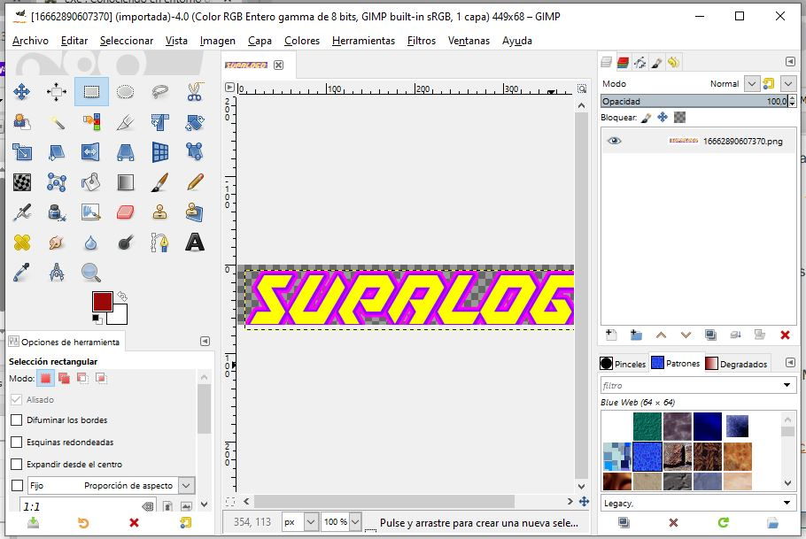

Ventanas en GIMP
Cuando se abre el programa GIMP se muestran en pantalla una serie de ventanas cada una de las cuales tiene una o más funciones.
Aunque hay una ventana principal dónde se muestra el menú horizontal y dónde se abren las imágenes que se van a editar, crear, etc. hay otras muchas ventanas que es necesario tener visibles para poder trabajar con el programa, por ejemplo:
- La ventana Caja de herramientas.
- La ventana de Opciones de herramienta cuyo contenido u opciones varían según la herramienta que hayamos seleccionado para trabajar.
- La ventana de capas.
- La ventana del Editor de pinceles.
- La ventana de Canales y la de Rutas.
- Y otras muchas que sirven para propósitos específicos y que pueden ser útiles en las diferentes tareas de GIMP.
Varias de estas ventanas se pueden agrupar en forma de pestañas en una sola ventana o área en la pantalla de la aplicación.

Puedes encontrar información al respecto en la documentación online de GIMP, en este caso particular en el enlace a Ventanas principales.